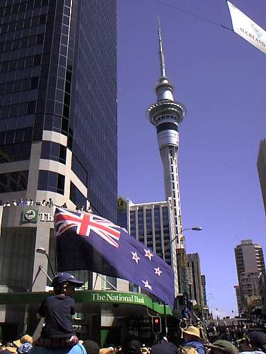
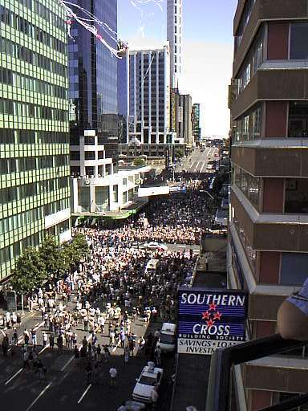
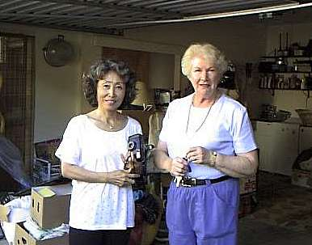
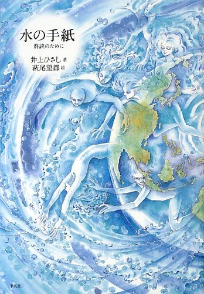

本棚から
恩人・友人関連の本など そして、風が走りぬけて行った
植田紗加栄 著 講談社 刊
ISBN 4-06-208592-5
525ページにもわたって綴られた、ぶ厚いこの１冊を読み終えての最初の感想は、
「よくもここまで調べ上げたなぁ.......」
というものだった。プロローグによれば、著者の植田紗加栄氏が守安祥太郎氏について興味を持ったのは、太平洋戦争前後の早稲田・慶応両大学のヨット部の取材中に彼の名前を耳にしたからだという。
そこからスタートし、日本各地を訪ねての、極めて多数の関係者への取材・インタビュー（北海道新聞に掲載されたジャズピアニスト：佐藤允彦氏の書評によれば、200人を越えるそうである）が行われ、本書巻末の参考資料リストに記された膨大な書籍・辞書・年表・定期刊行物、さらにはレコード・テープ・ＣＤ、映画・ビデオ・演劇・ラジオ・テレビなどなどを情報源として、成果がこの１冊に結実するまでには、５年の歳月を要したとのことである。
根気と言うよりも執念という方が適切な気がする著者の取材、構成、執筆力には非常に圧倒されるものがあった。さらに、直接守安氏に関わるエピソードのみでなく、時折さりげなく挿入される時代背景の描写が、効果的にストーリーに厚みを加えていると感じられた。例えば、第３章の冒頭にある、昭和30年9月28日の守安氏と友人たちのやりとりを描いた場面では、その日行われた大相撲の歴史的大勝負である関脇・若ノ花と横綱・千代の山との対戦結果や川崎球場や駒沢球場でのプロ野球の対戦カード、それらを中止に追い込んだ台風２２号の進路までもが記述されている。このような背景情報を加えようと思いつくこともすごいが、調べ上げて読み応えのある文章に起こすまでには多大な努力が必要とされるだろう。
私には、このような著者の取材、構成、執筆を支えた行動力の源泉は、本書の献辞にあるとおり、守安祥太郎の霊が、著者に向かって、
『必ず書いて欲しい.......』
と訴え続けたことにあると思われる。もちろんそんなことは有り得ないし、著者がそう感じたという記述も無い。しかし、有り余る才能と不断の努力の人であった一人のジャズピアニストが、その短い一生を不幸な形で終えてしまった経過の隅々まで、著者が懸命に追い続けた成果である本書を読んだ後には、どうしてもそう思えてくるのである。
私は全く楽器が出来ないし、聞く方は60～80年代くらいの和洋ポップスといった具合で、ジャズのことはほとんど知識が無く、あまり聴いた事が無い。ずっと昔、まだ18歳の頃、実習で訪れた長野県にある味噌川ダムの建設事務所で、コンクリートの試験主任だった近藤さんという方（当時30歳くらいだったろうか？）がジャズの愛好家で、ソニーから発売されて間もない「ウォークマン」で聴かせてくれたことがあったが、曲名も演奏者も知らず、
『ふ～ん、これがジャズという音楽か.......』
という感じで、特に印象に残らなかった。
音楽に疎い私であるが、本書は守安祥太郎氏の激動の人生を見事な構成で描ききっているので、非常に面白く一気に読んでしまった。ストーリーは、守安氏が出演し、日本のジャズ史に輝かしい１ページを飾った「幻のモカンボ・セッション'54」の活き活きとした記述から始まっている。（プロローグ・第１章・第２章）
耳で聴いて感じる音楽のことを、文章で表現することは非常に困難な作業だったと思われるが、著者はその難しい課題を見事にこなしている。例えば、
“中世の曲がりくねった石畳の道を、針のように尖った塔めざして走り抜ける馬の蹄の音のように、守安のピアノは疾走する。”
といったように。そして、クラシックやジャズのコード進行などについてもとてもわかりやすく記述されていると思った。僕がそれを理解出来るかどうかは別にしても。あとがきによると著者は、ピアニスト・編曲家の方々からジャズ理論を学んだ上で執筆されたようである。
第３章では、守安氏の行方不明、捜索の進捗状況、そして鉄道飛び込みでの自死に至る経過が詳細に取材、調査されており、読者は偉大な才能が永遠に喪われたことを知らされる。彼の死を報じた、当時の朝日・読売・日経各紙のベタ記事が調べられて載っている。さらに目黒の駅、大崎警察署、警視庁にも取材が行われ、山手線の運転士をも探し出そうと試みられている。この章の最後には、守安氏が行方不明中の昭和30年10月1日に行われた国勢調査の結果が記されており、すでに亡き人となっていた守安氏を含め、日本の総人口が 89,275,529人だったという記述で幕を閉じている。
第４章以降は、守安氏の幼少期から学生時代、陸軍経理学校での凄惨な空襲体験、苦しい家計を助けるため、なりたかったクラシックのピアニストではなく、給料の良いジャズピアニストとしてのバンド活動を始めて才能を開花させ、終戦後の進駐軍キャンプやクラブでの活発な演奏の日々、密かなる片思いの感情、そして謎の死の原因究明へと物語は進み、読者をぐいぐいと引き込んで行く。
昔から音楽の授業が苦手で楽譜を読むことも出来ない私のような者には想像も付かないのだが、守安氏はレコードで聴いた曲をすぐに五線譜に書き取っていくことが出来たそうだ。
痛快だったのは、昭和24年頃、茅ヶ崎にあった米軍キャンプで、楽団の控室から山のように積まれたレコードを選りすぐって密かに持ち出し、相当の枚数を磨り減って白くなるまで聴いて採譜したというエピソードである。さらに守安氏たちは米軍兵が利用できるように備えられていたヒット曲集の楽譜も“密輸”して持ち帰り、自分達のレパートリーに加えていたそうである。加えてキャンプで演奏する日本人バンドのメンバーには、将校用食堂でフルコースの料理が振る舞われたという。世間の食糧事情からすれば、夢のような待遇だったろう。
一方、悲しかったのは、その茅ヶ崎の米軍キャンプに駐屯していた軽戦車中隊の約200人の米兵達が、一夜にして新しい戦場、朝鮮半島の釜山へと出撃し、北朝鮮軍の重戦車隊と交戦し壊滅してしまったという事実である。激しかった太平洋戦争が終わり、日本でつかの間の平和、そして音楽を楽しんでいた兵士達はまた新たな地獄へと送り込まれてしまったのだ。第二次世界大戦後の冷戦構造が生み出した朝鮮戦争は1950年から1953年まで続き、現在に至るまで大きな爪痕を残している。さらにインドシナではインドシナ戦争からそれに続くベトナム戦争が勃発し、アメリカ、南北ベトナム、韓国、タイ、フィリピン、オーストラリア、ニュージーランド、ソ連、北朝鮮、中国という多数の国々の兵士達を巻き込み、新たな悲惨な戦争が1975年4月まで続いた。
その後も現在に至るまで世界各地で紛争、戦争が絶えず、極めて多くの人々を悲惨な状況に追い込んでいる。平和というものは本当に貴重で大切なものであり、また脆弱なものであると思う。
物語を読み終えて私が特に興味を持ったのは、守安氏が躁鬱病を患っていた可能性があり、それが自死の原因となったのではないか？ という推察である。私も同じ病気に苦しめられつつ付き合ってすでに35年以上になるので、躁状態の無条件な幸福感のほとばしりや、ひるがえって鬱に落ち込んだときの悲惨さが身に沁みて感じられ、我がことのように共感できた。さらに、陸軍経理学校時代に、空襲で亡くなられた人々の死体処理に加わったという悲惨な戦争体験が、失恋そして自死の遠因かもしれないという推測には心を打たれた。
悲惨な戦争体験、そして躁鬱病というと、どこか小説家の開高健氏に通ずるものがあるように感じられる。躁鬱の気質は天才肌の芸術家に多いという記述があったが、守安氏もきっとそうだったのだろう.......。
開高健氏は有名な釣り人だったのだが、釣りということになると、面白かったエピソードは、守安氏は魚屋の店主が降参するほど魚に関する知識が豊富で、ボロボロになるまで魚類図鑑を読み込んでいたそうである。同じバンドだったことのあるサックス奏者、宮沢昭氏は、守安氏から魚について影響を受けてから釣りが趣味となり、後年日本ジャズ大賞を受賞した二作は、「岩魚」「山女」という川魚の名前をタイトルにした作品だそうである。いったいどんな曲なのだろうか？ 私が聴いてもおそらくわからないだろうが、宮沢氏はよほど渓流釣りに魅せられていたのであろう。
今、YouTube で検索してみると、宮沢氏の「山女魚」さらに「Nijimasu(1970)」という曲がアップされており聴くことができる。
「山女魚」の方には、おそらくCDのジャケット写真と思われる画像もアップされており、美しい渓流でのヤマメ釣りの光景が撮されている。ジャンルは違うが、シューベルトには「鱒」というタイトルの歌曲があることを、はるか昔に開高氏のエッセイで読んだことがあった。
本書の冒頭で記述されている、守安祥太郎氏の天才的なピアノ演奏が演じられた「幻の“モカンボ”セッション」を唯一今に伝えるレコード（２枚組）は、1990年にＣＤ化されており、現在でも入手が可能である。また、YouTube でも、“守安祥太郎” で検索すれば、いくつかの曲や彼を特集したFMラジオの音源がアップされている。ジャズの好きな方、判る方はぜひ聴いてみていただきたい。
私も試しに「I WANT TO BE HAPPY」を聴いてみたが、
『ぶっちぎられた.....』
という印象で、やはりジャズの面白さはまったく判らなかった。しかし、守安氏のピアノの音色が速射砲のように連続して炸裂していることだけは聴き取れた。でも、20件にも及ぶ視聴者からのコメント欄を読んでみると、皆さん一様に驚愕、そして感動していることがわかる。
本書は、1997年5月の出版ということで、すでに20年近い時が経っているのだが、今でもアマゾンで手に入る。紹介ページには、一般読者によるレビューが５件掲載されているが、どの方の評価も高く、満点の星５つが４人、残る１人が星４つという結果である。カスタマーレビューの投稿日付も2007年から2017年となっており、この労作にして傑作の価値は年月を経ても色褪せていないことがわかる。中でも、なるほどなぁと納得したのは、“耳無し芳一”さんという方の、「著者がジャズを知らないことの利点が最大限に生かされた評伝」というレビューである。引用させていただくと
とにかく美しい本。出版当時に買って、なぜか読み始めたとたん目から涙があふれてきたことを憶えている。今改めてページをめくってみても同様だった。
ジャズマンの評伝なんてものは、どこかいかがわしさがつきまとうものだが、これは全く違った。
大戦前後の早慶ヨット部の取材の中で、慶応ヨット部主将がジャズピアノ弾きになったことへの興味から、著者の守安へのアプローチが始まる。
インタビューした相手の守安への想いに突き動かされ、次々と取材を重ねていくうちに"書かされてしまう"著者は、理想的な評伝作家だと思う。ジャズについての知ったかぶりがなく、丁寧に当時の生々しい状況を伝えている。
一人の人物の生涯が、関わった人々の証言からこのような形でリアライズすることの驚きと感動！
とあった。実に的確な、素晴らしい書評だと思う。
守安祥太郎氏は、この本のタイトル通り、31年のあまりにも短い生涯を走りぬけて行ってしまったのだが、彼の遺した超絶技巧的な演奏は今日まで語り継がれ、音源としても残っている。そしてまた、彼の生涯を粘り強く丹念に掘り起こし、見事に構成した本書も長く読み継がれて行くのだろう。ヒポクラテスの箴言通り、「芸術は長く人生は短し」である。
話は変わるが、ひと昔前の2007年に、僕の好きな「タモリ：森田一義氏」
が '77～78年 に発表したＬＰレコード「タモリ」及び「タモリ 2」がＣＤ化されていることを知り、すぐに買い込んで、以来愛聴している。その中の曲目？ には、あの伝説的な四カ国対抗麻雀などに加え、「タモリの大放送：教養講座 “日本ジャズ界の変遷”」というトラックがあり、タモリ独特のパロディで包まれてはいるが、この講座でそれなりにジャズのことを学んだ。（笑）
ブルー・ノートというジャズ用語や、ブルースの発祥とその音階、ピアノのことをヤノピ、ラッパはパツラとひっくり返して呼ぶジャズマン達の独特の用語などもそのＣＤで知ったのである。などというまるでお笑いぐさの知識しか持っていないのであるが、大好きなＳＦ作家の筒井康隆氏つながりで、ジャズピアニストの山下洋輔氏の面白いエッセイや演奏旅行記なども読んだことがあった。しかし、肝心の山下氏による“鍵盤に肘打ちを食らわせる！”というジャズピアノは全く聴いたことが無い。
この本の著者が、山下洋輔氏を通じて筒井康隆氏にメッセージを託し、そこから取材の道が開け、６枚もの非常に貴重な写真が手に入ったというエピソードは実に面白かった。他にも音楽界の著名人であった中村八大氏やハナ肇氏、有名なジャズピアニストの秋吉敏子（正式には穐吉敏子）氏、渡辺貞夫氏らとの関わりも、へぇ～そうだったのか！と感心させられた。
さてここからは、著者の植田紗加栄氏についてであるが、実は紗加栄さん（以後、こう呼ばせていただく）は、私のニュージーランド留学生時代からの恩人・友人であり、この本もじきじきに贈って下さったものなのである。今でも鮮明に覚えているが、紗加栄さんと初めて出会ったのは、1999年の11～12月頃、オークランド大学構内の書店だった。ずらりと並んだ専門書の棚の前で、真剣に本を探している彼女を見かけて、
『なんとなくこの人、日本人っぽいな.......』
と思い、声をかけてみると、やはり日本からの留学生で、僕と同じ Languages International という語学学校で英語を学んでおり、今日は英語の辞書を探しにこの書店に来たとのことだった。語学学校とオークランド大学とは隣り合わせなので、僕もよく大学の食堂や書店に立ち寄っていた。そこで紗加栄さんには、僕も以前購入しており、これは良い辞書だと思った The COBUILD SERIES LEARNER'S DICTIONARY という１冊をお薦めしたのがお付き合いの始まりである。
紗加栄さんは、2000年にオークランド湾を舞台にして開催されていた世界的に有名なヨットレース、「アメリカズ・カップ」の取材のため、レース開催前に語学学校で学びつつ現地取材を行っていた。
このレースには日本からも「ニッポン・チャレンジ」が参加して４位入賞という健闘を見せた。
日本艇のキャンプ地には僕の住む豊橋市のお隣、蒲郡市が選定され、話題になったものである。僕が名古屋のコンサルタント会社に勤務していた'90年代前半に、ジャーナリストの木村太郎氏の講演を聴く機会があり、そこでなぜ日本艇のキャンプ地に三河湾・蒲郡市が選ばれたかのいきさつが語られていた。当時の日本チームのヘッドコーチ（外国人、名前は忘れた）の方が、日本全国の港を文字通り津々浦々視察して周り、その結果、「 Gama は最高だ！」との一言で決まったという。
僕も紗加栄さんの計らいで、記者証が無いと入れないアメリカズ・カップのプレスルームに入らせてもらったり、非売品の Compaq （懐かしい響き！）ブランドのマウスパッド（少し厚みのある透明ビニール製で、中にプラスティック製の小さなヨットと液体が入っており、揺らすとヨットが中で滑り動く）を頂いたりしたことがあった。
あの時のオークランドは街全体がアメリカズ・カップ１色に染められた感じで、港に近いショッピングセンター前の広場には、大きなディスプレイボードが建てられて毎日のレースの結果と各チームの順位が表示されていたのを覚えている。レースは見事ニュージーランド艇が優勝し、前大会（1995年）に勝ち取ったカップを防衛したのであった。


今思えば、1999～2000年頃も、紗加栄さんが本書を著すきっかけとなった、ヨットに関する熱心な取材は続いていたのだろう。
以来、紗加栄さんとは語学学校での良きスクールメイトとなり、お休みの日には僕がホームステイしていた Mrs.Jo Harman さん宅へ遊びに来たり、


近所の名所：ワントリー・ヒルに登ったりしたのだ。小柄な体つきであるが、長年テニスを愛好されているそうで、エネルギッシュに丘の急坂を登っていく姿を思い出す。

そして2000年2月、僕は無事ハミルトン市にあるワイカト大学への編入学が認められ、語学学校での生活を終えてハーマン夫人のお宅を出て引っ越しすることとなった。そこで、読書好きで親日家、日本料理にも詳しくいつも美味しい食事を作ってくれたハーマン夫人宅へ、僕の次にホームステイしたらどうですかと紗加栄さんに提案し、彼女も続いてハーマン夫人宅に住むことになったといういきさつがある。

さらに2002年2月頃、ワイカト大学で修士論文に取り組んでいた僕は、持病の躁鬱病の症状が7年ぶりくらいで再発・悪化し、ハミルトン市の病院に入院してしまった。快復し面会も出来るようになった頃、ハーマン夫人と紗加栄さんがはるばるオークランドから車で２時間もかけてお見舞いに来てくれたこともあった。病院の面会室でお二人に会えた時には、涙が出るほど嬉しかった。
紗加栄さんとは、僕たちが日本に帰って来てからもお付き合いを続けさせていただいて今日に至る。これまでに、本書を始め、この本の書評が載った新聞記事、本書に出てくる岡崎市在住の医師、故内田修氏に関する記事や開高健氏に関する記事、そして紗加栄さんが企画・編集・プロデュースされた本 ー 井上ひさし著、萩尾望都絵「水の手紙」

など、いろいろなものを送って下さった。また、僕が2017年1月に茅ヶ崎の開高健記念館を訪れた際には、見学を終えてから横浜に行き、久しぶりに紗加栄さんと再会することができた。
記念館で、開高氏の葬儀の際に司馬遼太郎氏が読んだ弔辞の全文が展示されていたことを伝えると、長年文学関係の編集の仕事に携わって来られた紗加栄さんは、仕事で司馬氏に会った際のエピソードを僕に話してくれた。また僕は、2010年にニュージーランドへ釣行した際にオークランドで再会したハーマン夫人のことを話してあげた。
今年、2018年11月20日から、8年ぶりとなるニュージーランド釣行に出かけるが、現在はオークランド郊外のリタイアメントビレッジに暮らすハーマン夫人を訪ねて、紗加栄さんの近況を報告しようと思っている。
１冊の本、１人の人と巡り会うという事は、人生の中で実に貴重で希有な出来事だと思う。素晴らしい本と、その著者に感謝して。
本棚から 目次へ
サイトマップ
ホームへ
お問い合わせ